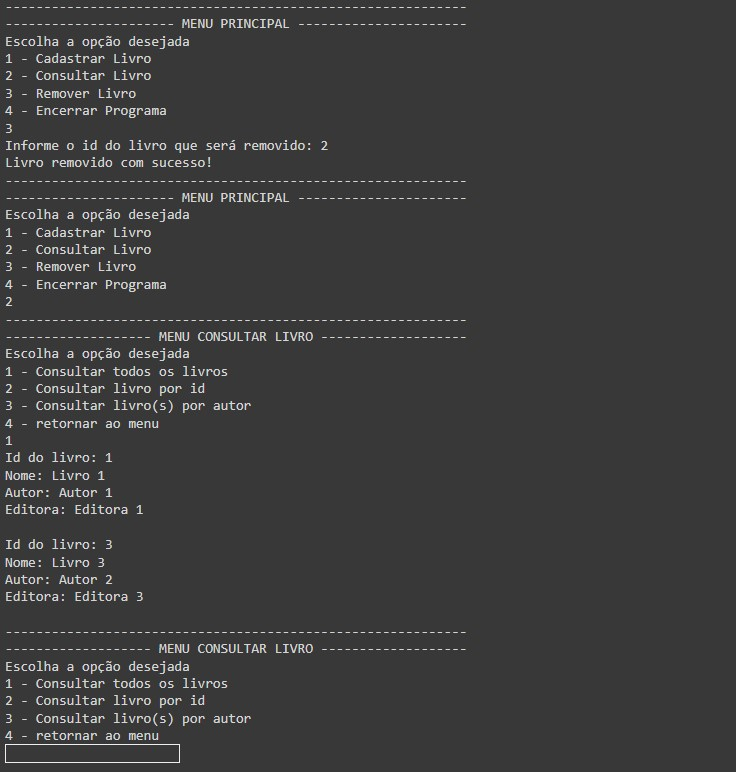
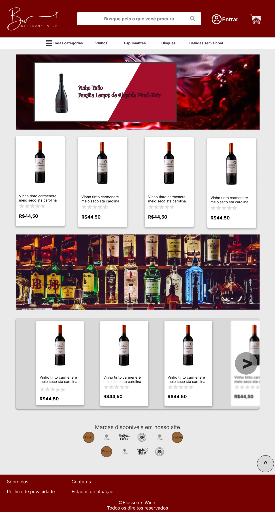

Portifólio de projetos:
Projeto em python - Trabalho de faculdade
Descrição:
O objetivo deste projeto foi desenvolver algorítmos em Python seguindo os critérios citados pela instituição de ensino com objetivo de ser avaliado e conseguir a aprovação na disciplina.
Técnologias utilizadas:
Python - Linguagem de programação
Veja mais no repositórioProjeto de conclusão de curso - Aplicação web
Descrição:
Trabalho de conclusão de curso. O objetivo aqui foi desenvolver uma aplicação completa usando PHP, Javascript, HTML e CSS
Técnologias utilizadas:
Javascript - Linguagem de programação
HTML - Linguagem de marcação de hipertexto
CSS - Linguagem de estilização
PHP - Linguagem de programação
Veja mais no repositório